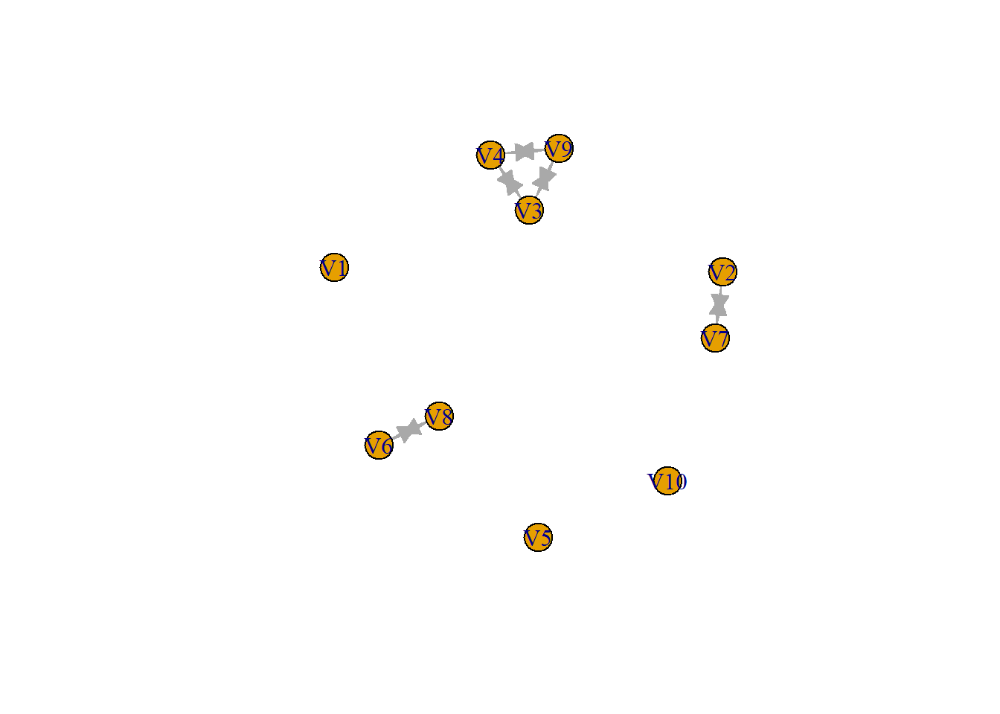

Topic: Geographical distance and co-authorship collaboration network analysis
Fitzgerald, J., Ojanperä, S., & O’Clery, N. (2021). Is academia becoming more localised? The growth of regional knowledge networks within international research collaboration. Applied Network Science, 6(1), 1-27. Link to article Fitzgerald et al., 2021
–> “while communities present in the global collaboration network before 2000 were often based on historical geopolitical or colonial lines, in more recent years they increasingly align with a simple partition of countries by regions. These findings are unexpected in light of a presumed continual increase in globalisation, and have significant implications for the design of programmes aimed at promoting international research collaboration and knowledge diffusion.”
Ponds, R., Van Oort, F., & Frenken, K. (2007). The geographical and institutional proximity of research collaboration. Papers in regional science, 86(3), 423-444. Link to article Ponds et al., 2007
–> Dutch study. Studied research collaboration between universities, but also between universities and organizations. Geographical proximity important factor in research collaboration due to: trust, transfering tacit knowledge, deeper understanding, etc.
RQ1: To what extent does the geographical distance between Dutch universities influence the between-university collaboration network of scientists in Sociology and Data Science departments within these universities?:
RQ2: To what extent does the influence of geographical distance differ between scientists who worked at more than one university compared to those who have worked at one?:
Introduction – Geographical distance and co-authorship
collaboration network analysis
Over the last few centuries globalization processes have resulted in
economic, political and cultural interdependence, supported by an
immense worldwide network of international connections and collaboration
(SOURCE). According to some, the globalization of science is the most
important aspect of modern globalization (Freeman, 2010). The subsequent
knowledge flows are beneficial for economic development and
specialization, networking, and the competitiveness in the scientific
field (Gui et al., 2019). Additionally, globalization has created a
large international collaboration network that benefits both students
and teachers when seeking specific knowledge and specializations
(Fitzgerald et al., 2021)
While globalization might not have shrunk geographical distances in a literal sense, relative distance might actually have (SOURCE?). Intuitively, the relative distance to other individuals or organizations located in a different region, country, or even continent has become the shortest it has ever been. Communication methods, such as phones, e-mail, and other communication methods have made it much easier to reach out to others who are not directly in our immediate environment. –smaller: also within country!! Combining the aspects of the globalization of science and a decrease of the relative distance between ourselves and others results in the main focus of this study, namely the extent to which
Relevance of Social Networks perspective: - Use SNA to display the structure of the network
Fitzgerald, J., Ojanperä, S., & O’Clery, N. (2021). Is academia becoming more localised? The growth of regional knowledge networks within international research collaboration. Applied Network Science, 6(1), 1-27. https://doi.org/10.1007/s41109-021-00371-w Freeman, R. B. (2010). Globalization of scientific and engineering talent: international mobility of students, workers, and ideas and the world economy. Economics of Innovation and New Technology, 19(5), 393-406. https://doi.org/10.1080/10438590903432871 Gui, Q., Liu, C., & Du, D. (2019). Globalization of science and international scientific collaboration: A network perspective. Geoforum, 105, 1-12. https://doi.org/10.1016/j.geoforum.2019.06.017
Descriptive Q: What does the collaboration network of scientists of Sociology departments at Dutch universities look like?
RQ1:
To what extent does the geographical distance between Sociology
departments of Dutch universities influence the between-university
collaboration network of scientists within these universities?
RQ2: Case study type question
To what extent does the geographical distance within the Sociology
department at * University influence the within-department collaboration
network of scientists within this department? *check for a university
that is geographically spread
or: To what extent does the geographical distance between the Sociology department and Political science department at * University influence the between-department collaboration network of scientists within this department?
Sample: staff of sociology departments at Dutch universities
RQ1 Needs:
If possible:
- Work or study at other universities
RQ2 Needs:
allzeromatrix <- matrix(0, nrow = 4, ncol = 4)
allzeromatrix#> [,1] [,2] [,3] [,4]
#> [1,] 0 0 0 0
#> [2,] 0 0 0 0
#> [3,] 0 0 0 0
#> [4,] 0 0 0 0# anderemanier <- c(0, 0, 1, 0, 0, 0, 0, 0, 0, 0, 0, 0, 0, 0, 0, 0) anderemaniermatrix <-
# matrix(anderemanier, nrow=4, ncol=4)
# placing a 1 instead of 1 of the zeros
onetiematrix <- matrix(0, nrow = 4, ncol = 4)
onetiematrix[1, 3] <- 1 #from node 1 to 3
onetiematrix#> [,1] [,2] [,3] [,4]
#> [1,] 0 0 1 0
#> [2,] 0 0 0 0
#> [3,] 0 0 0 0
#> [4,] 0 0 0 0# install.packages('igraph')
library(igraph)
# triad_census(graph) #doesnt work yet, need to provide graph object
testgraph0 <- graph_from_adjacency_matrix(adjmatrix = allzeromatrix)
triad_census(testgraph0) # gives 16 numbers, relate to 16 possible triads, e.g. 400000000000 means there are 4 003 triads aka no ties#> [1] 4 0 0 0 0 0 0 0 0 0 0 0 0 0 0 0testgraph1 <- graph_from_adjacency_matrix(adjmatrix = onetiematrix)
triad_census(testgraph1)#> [1] 2 2 0 0 0 0 0 0 0 0 0 0 0 0 0 0# install.packages('RSiena')
library(RSiena)
s501#> V1 V2 V3 V4 V5 V6 V7 V8 V9 V10 V11 V12 V13 V14 V15 V16 V17 V18 V19 V20 V21 V22 V23 V24 V25 V26
#> 1 0 0 0 0 0 0 0 0 0 0 1 0 0 1 0 0 0 0 0 0 0 0 0 0 0 0
#> 2 0 0 0 0 0 0 1 0 0 0 1 0 0 0 0 0 0 0 0 0 0 0 0 0 0 0
#> 3 0 0 0 1 0 0 0 0 1 0 0 0 0 0 0 0 0 0 0 0 0 0 0 0 0 0
#> 4 0 0 1 0 0 0 0 0 1 0 0 0 0 0 0 0 0 0 0 0 0 0 0 0 0 0
#> 5 0 0 0 0 0 0 0 0 0 0 0 0 0 0 0 0 0 0 0 0 0 0 0 0 0 0
#> 6 0 0 0 0 0 0 0 1 0 0 0 0 0 0 0 0 0 0 0 0 0 0 0 0 0 0
#> 7 0 1 0 0 0 0 0 0 0 0 0 0 0 0 0 0 0 0 0 0 0 0 0 0 0 0
#> 8 0 0 0 0 0 1 0 0 0 0 0 0 0 0 0 0 0 0 0 0 0 0 0 0 0 0
#> 9 0 0 1 1 0 0 0 0 0 0 0 0 0 0 0 0 0 0 0 0 0 0 0 0 0 0
#> 10 0 0 0 0 0 0 0 0 0 0 1 0 0 0 1 0 0 0 0 0 0 0 0 0 0 0
#> 11 0 1 0 0 0 0 0 0 0 0 0 0 0 0 1 1 0 0 0 0 0 0 0 0 0 0
#> 12 0 0 0 0 0 0 1 0 0 0 0 0 0 0 0 0 0 0 0 0 0 0 0 0 0 0
#> 13 0 0 0 0 0 0 0 0 0 0 0 0 0 0 0 0 0 0 0 0 0 0 0 0 0 0
#> 14 1 0 0 0 0 0 0 0 0 1 1 0 0 0 0 0 0 0 0 0 0 0 0 0 0 0
#> 15 0 0 0 0 0 0 0 0 0 1 1 0 0 0 0 1 0 0 0 0 0 0 0 0 0 0
#> 16 0 0 0 0 0 0 0 0 0 0 1 0 0 0 1 0 0 0 0 0 0 0 0 0 0 0
#> 17 0 0 0 0 0 0 0 0 0 0 0 0 0 0 0 0 0 1 1 0 1 1 0 1 0 0
#> 18 0 0 0 0 0 0 0 0 0 0 0 0 0 0 0 0 0 0 1 0 0 0 0 0 0 0
#> 19 0 0 0 0 0 0 0 0 0 0 1 0 0 0 0 0 0 0 0 0 0 0 0 1 0 1
#> 20 0 0 0 0 0 0 0 0 0 0 0 0 0 0 0 0 0 0 0 0 0 0 0 0 0 0
#> 21 0 0 0 0 0 0 0 0 0 0 0 0 0 0 0 0 0 0 0 0 0 1 0 0 0 0
#> 22 0 0 0 0 0 0 0 0 0 0 0 0 0 0 0 0 1 0 0 0 1 0 0 0 0 0
#> 23 0 0 0 0 0 0 0 0 0 0 0 0 0 0 0 0 0 0 0 0 0 0 0 1 0 0
#> 24 0 0 0 0 0 0 0 0 0 0 0 0 0 0 0 0 1 0 1 0 1 1 1 0 0 0
#> 25 0 0 0 0 0 0 0 0 0 0 0 0 0 0 0 0 0 0 0 0 0 1 0 0 0 0
#> 26 0 0 0 0 0 0 1 0 0 0 0 0 0 0 0 0 0 0 0 0 0 0 0 0 0 0
#> 27 0 0 0 0 0 0 0 0 0 0 0 0 0 0 0 0 0 0 0 0 0 0 0 0 0 0
#> 28 0 0 0 0 0 0 0 0 0 0 0 0 0 0 0 0 0 0 0 0 0 0 0 0 0 0
#> 29 0 0 0 0 0 0 0 0 0 0 0 0 0 0 0 0 0 0 0 0 0 0 0 0 0 1
#> 30 0 0 0 0 0 0 0 0 0 0 1 0 0 0 0 0 0 0 0 0 0 0 0 0 0 1
#> 31 0 0 0 0 0 0 0 0 0 0 0 0 0 0 0 0 0 0 0 0 1 0 0 0 1 0
#> 32 0 0 0 0 1 0 0 0 0 0 0 0 0 0 0 0 0 0 0 0 1 0 0 0 0 0
#> 33 0 0 0 0 0 0 0 0 0 1 0 0 0 0 0 0 0 0 0 0 0 0 0 0 0 0
#> 34 0 0 0 0 0 0 0 0 0 0 0 0 0 0 0 0 0 0 0 0 0 0 0 0 0 0
#> 35 0 0 0 0 0 0 0 0 0 0 0 0 0 0 0 0 0 1 0 0 0 0 0 0 0 0
#> 36 0 0 0 0 0 0 0 0 0 0 0 0 0 0 0 0 0 0 0 0 0 0 0 0 0 0
#> 37 0 0 0 0 0 0 0 0 0 0 0 0 0 0 0 0 0 0 0 0 0 0 0 0 0 0
#> 38 0 0 0 0 0 0 0 0 0 0 0 0 0 0 0 0 0 0 0 0 0 0 0 0 0 0
#> 39 0 0 0 0 0 0 0 0 0 0 0 0 0 0 0 0 0 0 0 0 0 0 0 0 0 0
#> 40 0 0 0 0 0 0 0 0 0 0 0 0 0 0 0 0 0 0 0 0 0 0 0 0 0 0
#> 41 0 0 0 0 0 0 0 0 0 0 0 0 0 0 0 0 0 0 0 0 0 0 0 0 0 0
#> 42 0 0 0 0 0 0 1 0 0 0 0 0 0 0 0 0 0 0 0 0 0 0 0 0 0 0
#> 43 0 0 0 0 0 0 0 0 0 0 0 0 0 0 0 0 0 0 0 0 0 1 0 0 0 0
#> 44 0 0 0 0 0 0 1 0 0 0 0 0 0 0 0 0 0 0 0 0 0 0 0 0 0 0
#> 45 0 0 0 0 0 0 0 0 0 0 0 0 0 0 0 0 0 0 0 0 0 0 0 0 0 0
#> 46 0 0 0 0 0 0 0 0 0 0 0 0 0 0 0 0 0 0 0 0 0 0 0 0 0 0
#> 47 0 0 0 0 0 0 0 0 0 0 0 0 0 0 0 0 0 0 0 0 0 0 0 0 0 0
#> 48 0 0 0 0 0 0 0 0 0 0 0 0 0 0 0 0 0 0 0 0 0 0 0 0 0 0
#> 49 0 0 0 0 0 0 0 0 0 0 0 0 0 0 0 0 0 0 0 0 0 0 0 0 0 0
#> 50 0 0 0 0 0 0 0 0 0 0 0 0 0 0 0 0 0 0 0 0 0 0 0 0 0 0
#> V27 V28 V29 V30 V31 V32 V33 V34 V35 V36 V37 V38 V39 V40 V41 V42 V43 V44 V45 V46 V47 V48 V49 V50
#> 1 0 0 0 0 0 0 0 0 0 0 0 0 0 0 0 0 0 0 0 0 0 0 0 0
#> 2 0 0 0 0 0 0 0 0 0 0 0 0 0 0 0 0 0 0 0 0 0 0 0 0
#> 3 0 0 0 0 0 0 0 0 0 0 0 0 0 0 0 0 0 0 0 0 0 0 0 0
#> 4 0 0 0 0 0 0 0 0 0 0 0 0 0 0 0 0 0 0 0 0 0 0 0 0
#> 5 0 0 0 0 0 1 0 0 0 0 0 0 0 0 0 0 0 0 0 0 0 0 0 0
#> 6 0 0 0 0 0 0 0 0 0 0 0 0 0 0 0 0 0 0 0 0 0 0 0 0
#> 7 0 0 0 0 0 0 0 0 0 0 0 0 0 0 0 1 0 1 0 0 0 0 0 0
#> 8 0 0 0 0 0 0 0 0 0 0 0 0 0 0 0 0 0 0 0 0 0 0 0 0
#> 9 0 0 0 0 0 0 0 0 0 0 0 0 0 0 0 0 0 0 0 0 0 0 0 0
#> 10 0 0 0 0 0 0 1 0 0 0 0 0 0 0 0 0 0 0 0 0 0 0 0 0
#> 11 0 0 0 0 0 0 0 0 0 0 0 0 0 0 0 0 0 0 0 0 0 0 0 0
#> 12 0 0 0 0 0 0 0 0 0 0 0 0 0 0 0 1 0 1 0 0 0 0 0 0
#> 13 0 0 0 0 0 0 0 0 0 0 0 0 0 0 0 0 0 0 0 0 0 0 0 0
#> 14 0 0 0 0 0 0 0 0 0 0 0 0 0 0 0 0 0 0 0 0 0 0 0 0
#> 15 0 0 0 0 0 0 0 0 0 0 0 0 0 0 0 0 0 0 0 0 0 0 0 0
#> 16 0 0 0 0 0 0 0 0 0 0 0 0 0 0 0 0 0 0 0 0 0 0 0 0
#> 17 0 0 0 0 0 0 0 0 0 0 0 0 0 0 0 0 0 0 0 0 0 0 0 0
#> 18 0 0 0 0 0 0 0 0 1 0 0 0 0 0 0 0 0 0 0 0 0 0 0 0
#> 19 0 0 0 1 0 0 0 0 0 0 0 0 0 0 0 0 0 0 0 0 0 0 0 0
#> 20 0 0 0 0 0 0 0 0 0 0 0 0 0 0 0 0 0 0 0 0 0 0 0 0
#> 21 0 0 0 0 0 0 0 0 0 0 0 0 0 0 0 0 0 0 0 0 0 0 0 0
#> 22 0 0 0 0 1 0 0 1 0 0 0 0 0 0 0 0 0 0 0 0 0 0 0 0
#> 23 0 0 0 0 0 0 0 0 0 0 0 0 0 0 0 0 0 0 0 0 0 0 0 0
#> 24 0 0 0 0 0 0 0 0 0 0 0 0 0 0 0 0 0 0 0 0 0 0 0 0
#> 25 0 0 0 0 1 1 0 0 0 0 0 0 0 0 0 0 0 0 0 0 0 0 0 0
#> 26 0 0 1 0 0 0 0 0 0 0 0 0 0 0 0 0 0 1 0 0 0 0 0 0
#> 27 0 1 1 1 0 0 0 0 0 0 0 0 0 0 0 0 0 0 0 0 0 0 0 0
#> 28 1 0 0 0 0 0 0 0 0 0 0 0 0 0 0 0 0 0 0 0 0 0 0 0
#> 29 0 0 0 1 0 0 1 0 0 0 0 0 0 0 0 0 0 0 0 0 0 0 0 0
#> 30 0 0 1 0 0 0 1 0 0 0 0 0 0 0 0 0 0 0 0 0 0 0 0 0
#> 31 0 0 0 0 0 1 0 0 0 0 0 0 0 0 0 0 0 0 0 0 0 0 0 0
#> 32 0 0 0 0 1 0 0 0 0 0 1 0 0 0 0 0 0 0 0 0 0 0 0 0
#> 33 0 0 0 1 0 0 0 0 0 0 0 0 0 0 0 0 0 0 0 0 0 0 0 0
#> 34 0 0 0 0 1 0 0 0 0 0 1 0 0 0 0 0 0 0 0 0 0 0 0 0
#> 35 0 0 0 0 0 0 0 0 0 0 0 0 0 0 0 0 0 0 0 0 0 0 0 0
#> 36 0 0 0 0 0 0 0 0 0 0 0 1 0 0 1 0 0 0 0 0 0 0 0 0
#> 37 0 0 0 0 1 1 0 1 0 0 0 0 0 0 0 0 0 0 0 0 0 0 0 0
#> 38 0 0 0 0 0 0 0 0 0 1 0 0 0 0 1 0 0 0 0 0 0 0 0 0
#> 39 0 0 0 0 0 0 0 0 0 0 0 0 0 0 0 0 1 0 0 0 0 0 0 0
#> 40 0 0 0 0 0 0 0 0 0 0 0 0 0 0 0 0 0 0 1 1 1 0 0 0
#> 41 0 0 0 0 0 0 0 0 0 1 0 1 0 0 0 0 0 0 0 0 0 0 0 0
#> 42 0 0 0 0 0 0 0 0 0 0 0 0 0 0 0 0 0 1 0 0 0 0 0 0
#> 43 0 0 0 0 0 0 0 0 0 0 0 0 1 0 0 0 0 0 0 0 0 0 0 0
#> 44 0 0 0 0 0 0 0 0 0 0 0 0 0 0 0 1 0 0 0 0 0 0 0 0
#> 45 0 0 0 0 0 0 0 0 0 0 0 0 0 1 0 0 0 0 0 1 1 0 0 0
#> 46 0 0 0 0 0 0 0 0 0 0 0 0 0 1 0 0 0 0 1 0 0 0 1 0
#> 47 0 0 0 0 0 0 0 0 0 0 0 0 0 0 0 0 0 0 0 0 0 0 0 0
#> 48 0 0 0 0 0 0 0 0 0 0 0 0 0 0 0 0 0 0 0 1 0 0 1 0
#> 49 0 0 0 0 0 0 0 0 0 0 0 0 0 0 0 0 0 0 0 1 0 1 0 0
#> 50 0 0 0 0 0 0 0 0 0 0 0 0 0 0 0 0 0 0 0 0 0 0 0 0dim(s501)#> [1] 50 50# selecting the first 10 by 10
trying1 <- s501[1:10, 1:10]
dim(trying1)#> [1] 10 10tryinggraph1 <- graph_from_adjacency_matrix(adjmatrix = trying1)
triad_census(tryinggraph1)#> [1] 82 0 37 0 0 0 0 0 0 0 0 0 0 0 0 1plot(tryinggraph1)
# 82 0 37 0 0 0 0 0 0 0 0 0 0 0 0 1 so, 82 non-ties, 37 reciprocated ties (of tryads! so dyad+one
# nonconnected counts), 1 complete circular tie total 120: (10*9*8)/2# centrality measures: degree, betweenness, closeness
# DEGREE table with degrees distribution
degree(tryinggraph1)#> V1 V2 V3 V4 V5 V6 V7 V8 V9 V10
#> 0 2 4 4 0 2 2 2 4 0degree_distribution(tryinggraph1)#> [1] 0.3 0.0 0.4 0.0 0.3# normalized degree centrality: ?hmmm...
# BETWEENNESS
betweenness(tryinggraph1)#> V1 V2 V3 V4 V5 V6 V7 V8 V9 V10
#> 0 0 0 0 0 0 0 0 0 0betweenness.estimate(tryinggraph1, directed = TRUE, cutoff = 10)#> V1 V2 V3 V4 V5 V6 V7 V8 V9 V10
#> 0 0 0 0 0 0 0 0 0 0estimate_betweenness(tryinggraph1, directed = TRUE, cutoff = 10)#> V1 V2 V3 V4 V5 V6 V7 V8 V9 V10
#> 0 0 0 0 0 0 0 0 0 0# CLOSENESS
closeness(tryinggraph1, mode = "out")#> V1 V2 V3 V4 V5 V6 V7 V8 V9 V10
#> NaN 1.0 0.5 0.5 NaN 1.0 1.0 1.0 0.5 NaN# mode: can switch between 'out'degree, 'in' degree, or 'total'/'all'
# transitivity
transitivity(tryinggraph1)#> [1] 1```
Last compiled on oktober, 2024